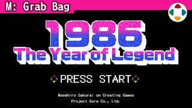
速览
樱井个人认为，若要举出游戏业最厉害的一年，他想说 1986 年——这一年诞生了以下游戏系列：《塞尔达传说》（2/21）、《热血硬派》（约 5 月，热血系列起源）、《勇者斗恶龙》（5/27）、《大盗伍佑卫门》（7/30）、《女武神冒险》（8/1）、《银河战士》（8/6）、《泡泡龙》（约 9 月）、《恶魔城》（9/26）、《R.B.I. 棒球（职业棒球家族）》（12/10）、《光神话》（12/19）等（日本发售日）。光是成为系列、以某种形式延续下来的就有这么多，名作众多，之后的波及效果惊人；而且这些系列几乎都以某种形式出现在《大乱斗》里，这也很厉害。为什么会出现这样的爆发？看看 1986 年的其他作品来思考：首先 FC 磁碟机发售，游戏容量在当时飞跃性增大（如《神秘的村雨城》）；再有所谓大容量 ROM（Mega ROM）登场（如《Zanac》），容量大幅提升，能做的事变多。当时是游戏非常上升的时代，家用、街机、PC 游戏各自发挥优势、激烈竞争，硬件与软件的进步都惊人——对越来越厉害的东西，人被吸引是必然的。1986 年 NES 在欧洲发售（美国是前一年 1985 年），那边也是游戏剧烈变化的时代吧。在日本，隐藏角色和秘技流行，可以说是对未知信息的惊喜和喜悦很高的时代（如《铁板阵》的隐藏角色、《宇宙巡航舰》的科乐美秘技）；反面是对不知道的人太严苛，再加上游戏庞大化、高难度化，作为实时世代他也要说，确有让人觉得严苛的地方。题外话：1986 年也是皮克斯《顽皮跳跳灯》（Luxo Jr.）公开的一年，娱乐 CG 的开端。如今能享受当时软件的方法也多了（如 Nintendo Switch Online），值得感恩。我们站在先驱开辟的道路延长线上，也想努力开辟新的道路。
1. 最厉害的一年 0:06
樱井个人认为，若要举出游戏业最厉害的一年，他想说 1986 年——这一年诞生了以下系列（日本发售日）：
| 日期 | 作品 |
|---|---|
| 2/21 | 塞尔达传说 |
| 约 5 月 | 热血硬派（热血系列起源） |
| 5/27 | 勇者斗恶龙 |
| 7/30 | 大盗伍佑卫门（奇幻忍者系列起源） |
| 8/1 | 女武神冒险 |
| 8/6 | 银河战士 |
| 约 9 月 | 泡泡龙 |
| 9/26 | 恶魔城 |
| 12/10 | R.B.I. 棒球（职业棒球家族） |
| 12/19 | 光神话 |
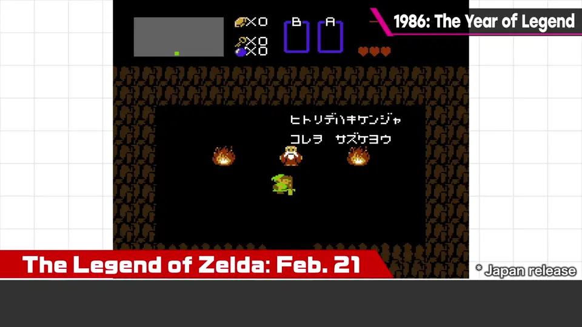
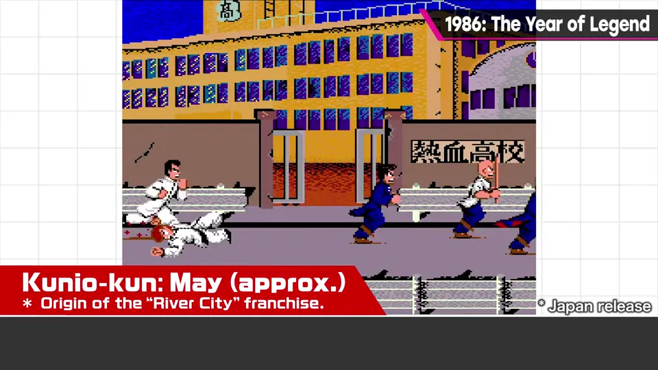
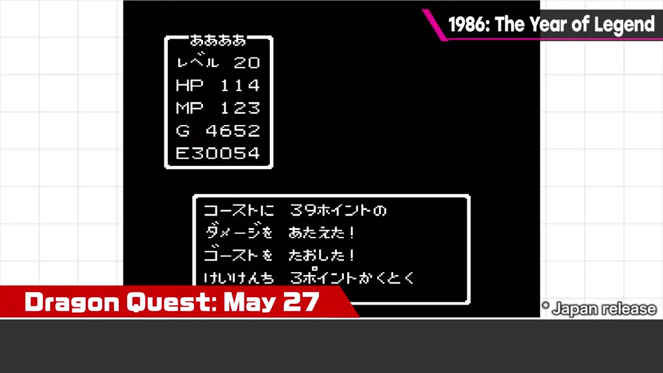
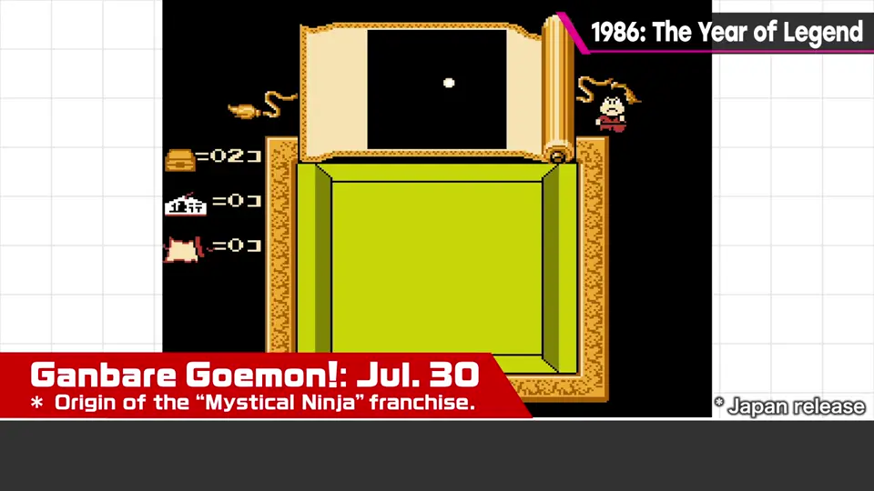
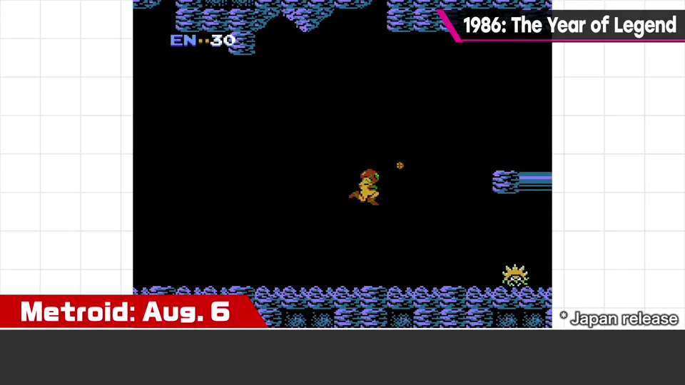
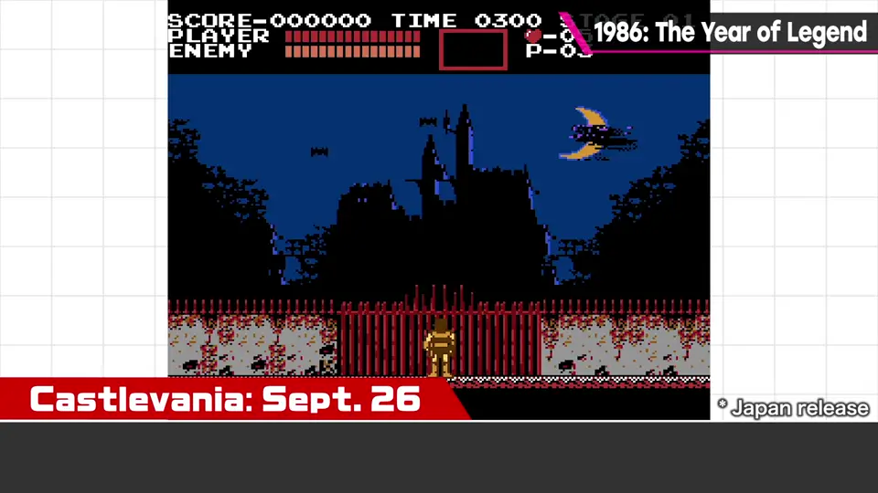
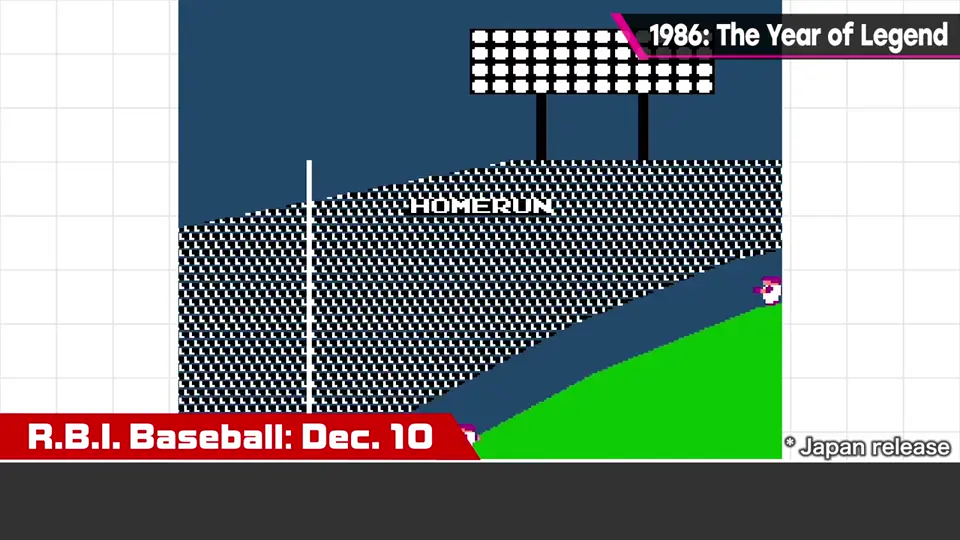
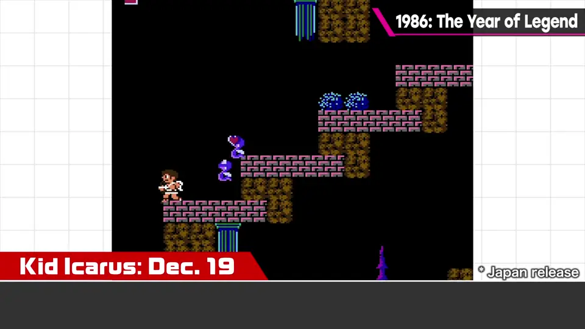
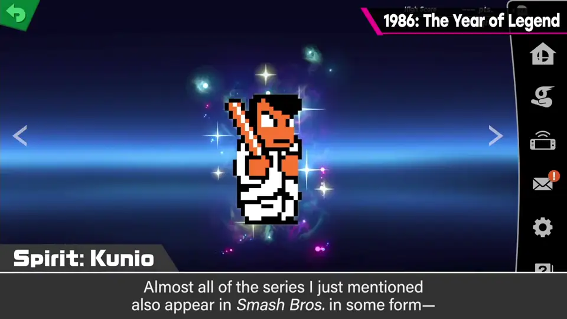
2. 为什么是 1986？ 2:00
看看 1986 年的其他作品来思考：
- FC 磁碟机发售，游戏容量在当时飞跃性增大。
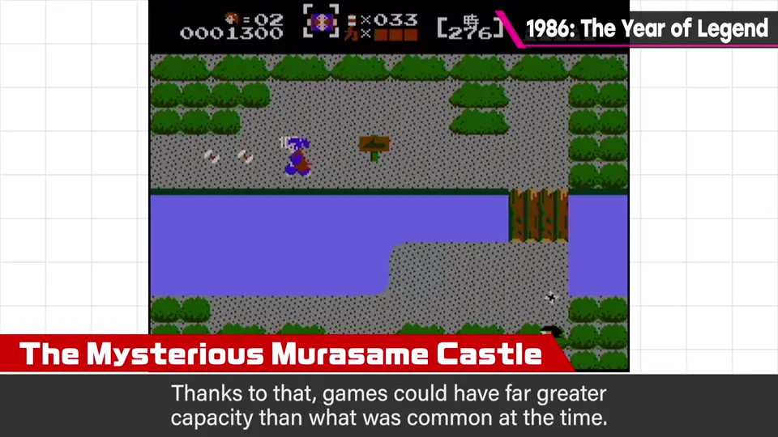
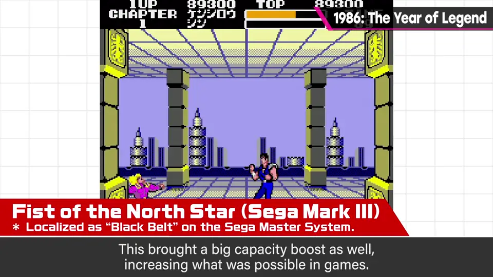
- 大容量 ROM（Mega ROM）登场，容量大幅提升，能做的事变多。
- 游戏整体非常上升：家用、街机、PC 各自发挥优势、激烈竞争。
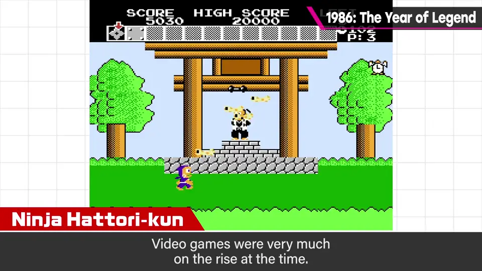
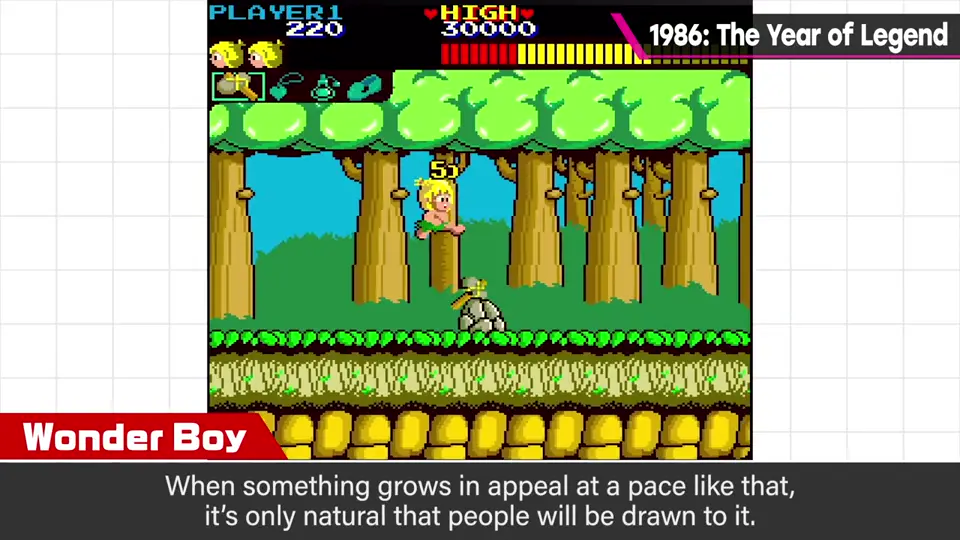
3. 海外与日本 3:16
1986 年 NES 在欧洲发售（美国是前一年 1985 年），那边也是游戏剧烈变化的时代。
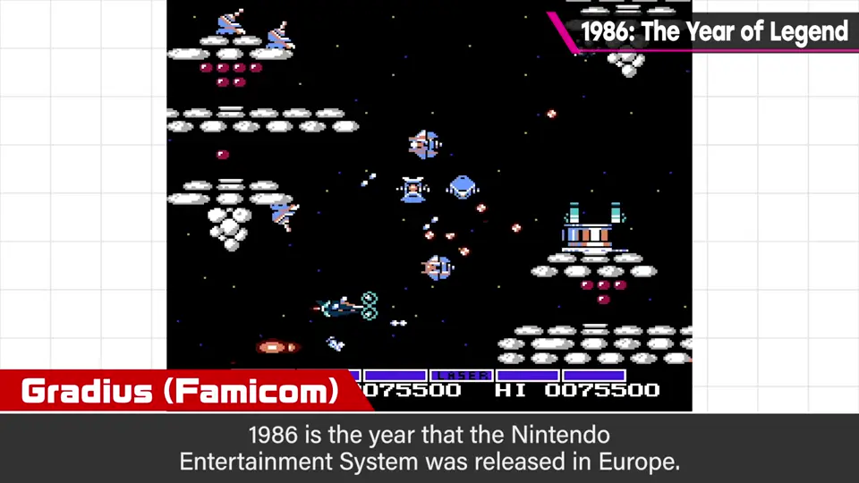
日本则流行隐藏角色和秘技，可以说是对未知信息的惊喜和喜悦很高的时代。
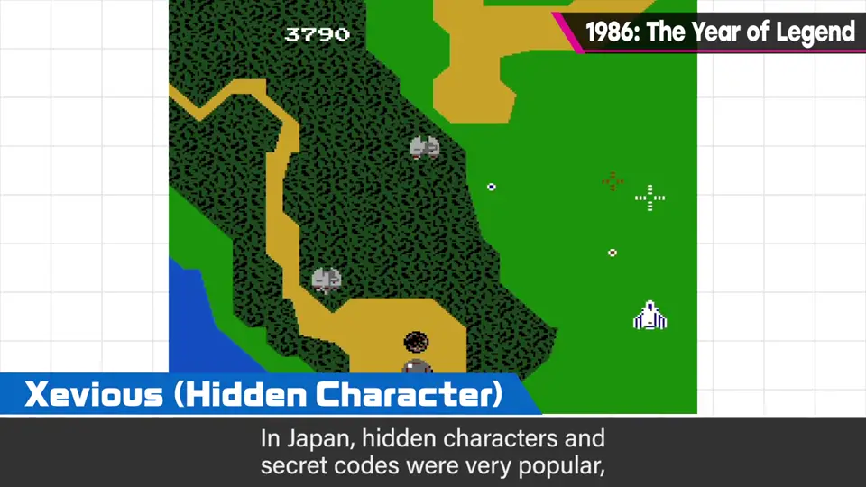
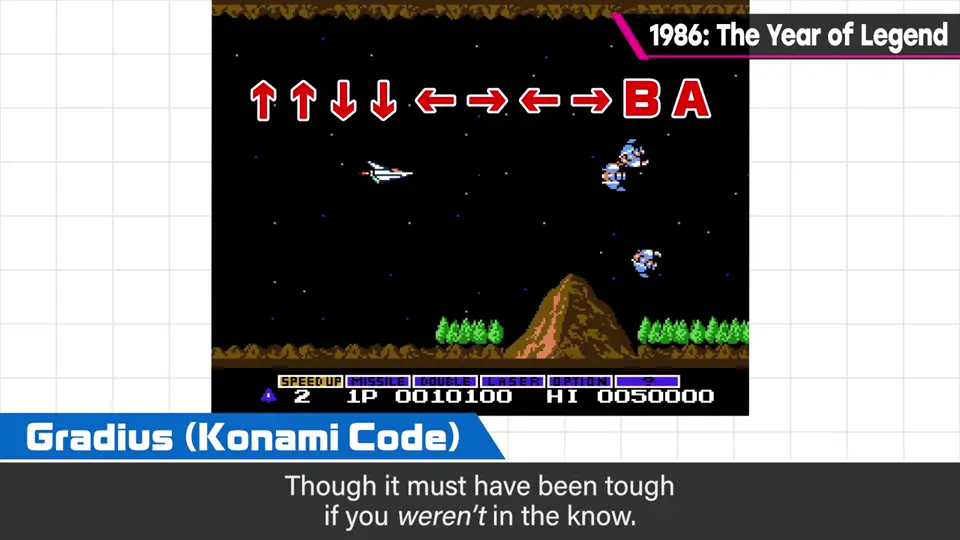
反面是对不知道的人太严苛；再加上庞大化、高难度化——作为实时世代他也要说，确有严苛之处。
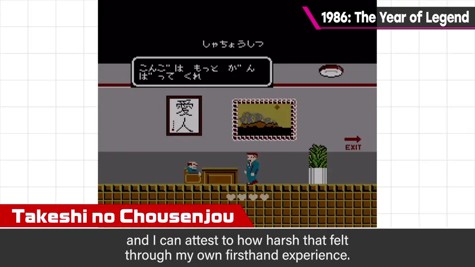
4. CG 的开端与今天 4:07
题外话：1986 年也是皮克斯《顽皮跳跳灯》公开的一年——娱乐 CG 的开端。
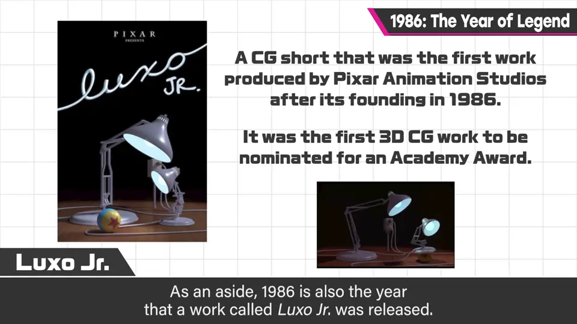
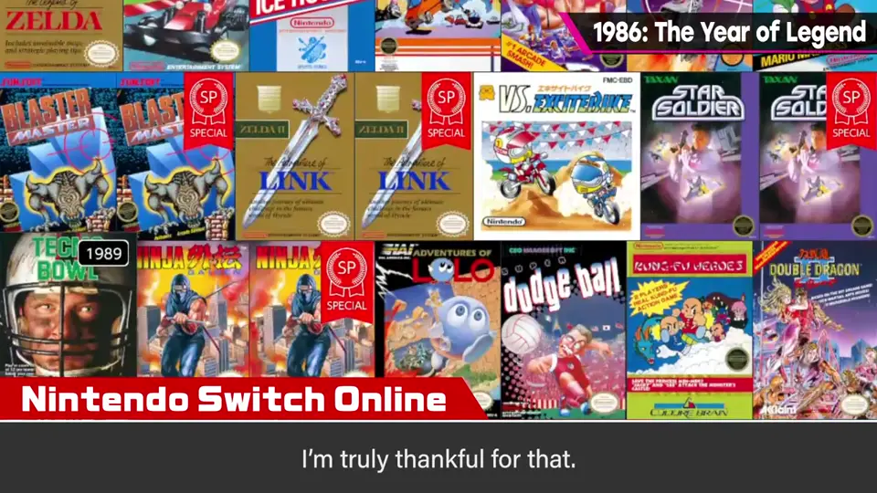
如今能享受当时软件的方法也多了，值得感恩。
自测题
1. 举出三个 1986 年诞生的系列。
《塞尔达传说》《勇者斗恶龙》《银河战士》（还有《恶魔城》《光神话》等）。 0:28
2. 樱井认为 1986 年名作爆发的原因有哪些？
磁碟机与 Mega ROM 带来的容量飞跃；家用、街机、PC 激烈竞争，软硬件飞速进步。 2:24
3. 当年流行隐藏角色和秘技，有什么另一面？
对不知情的人太严苛，加上庞大化、高难度化。 4:00